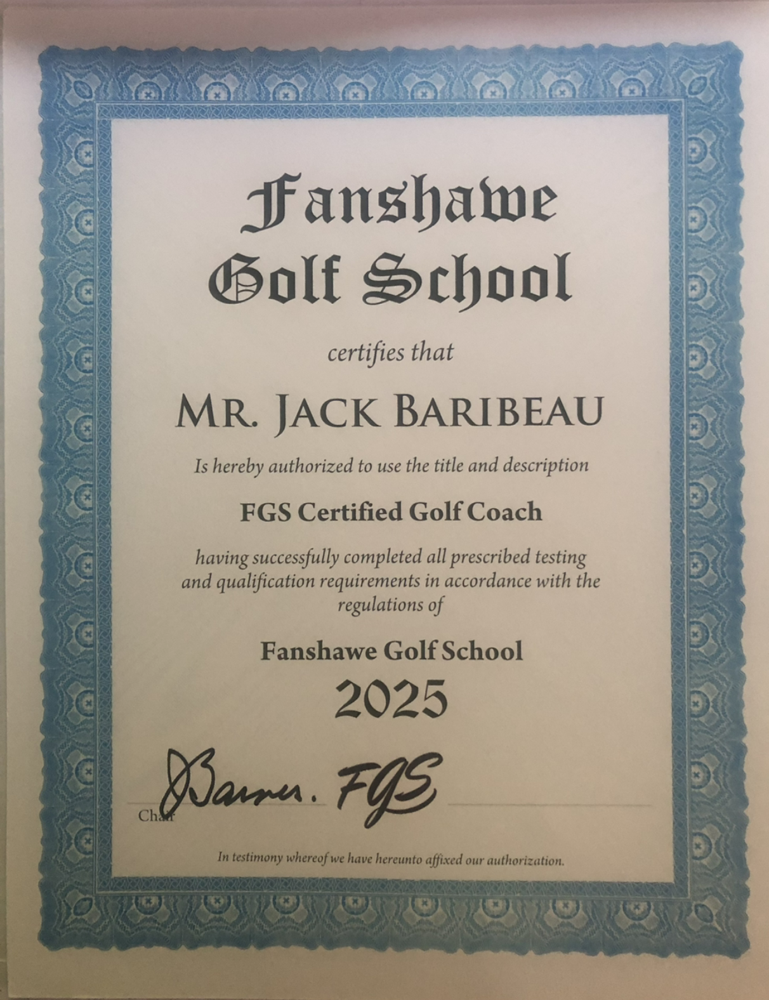

About Jack
Jack is a seasoned golfer who has been on the course from a young age. He is passionate about the game and loves sharing that passion with others.
With many years of coaching experience across a range of sports — including hockey and baseball — Jack brings a practical, athlete-first approach to helping players improve. He is a Fanshawe Golf School Certified Coach, trained by Joe Barnes.
Jack is also the founder of the Elgin Innovation Centre and the Old Imperial Farmer's Market, where the golf simulator is located.

Fanshawe Golf School Certified Coach
Training by Joe Barnes